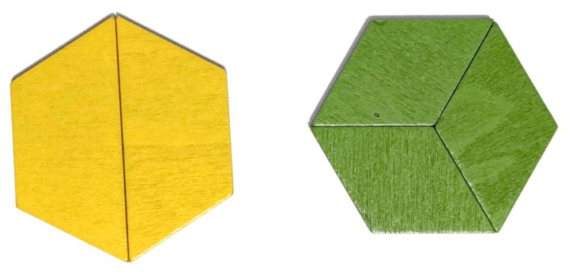

Construimos dos formas iguales con pattern blocks de colores diferentes.

En esta actividad el objetivo es construir las dos formas sombreadas al mismo tiempo, con la restricción de que no se repita ningún color de una de ellas en la otra. Hay 13 retos con creciente dificultad.